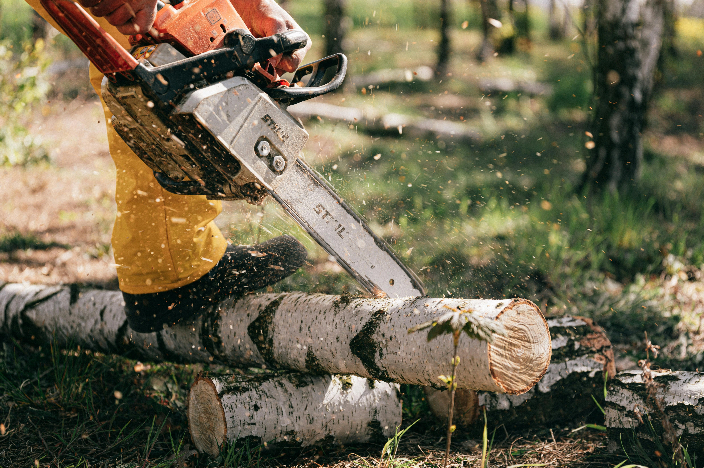
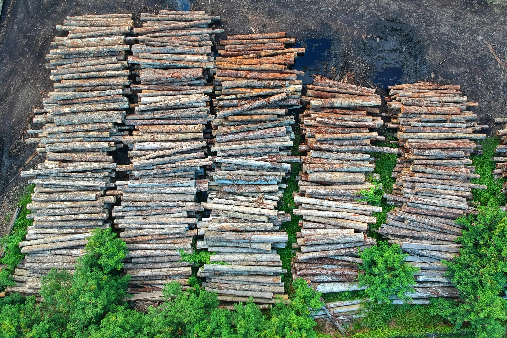
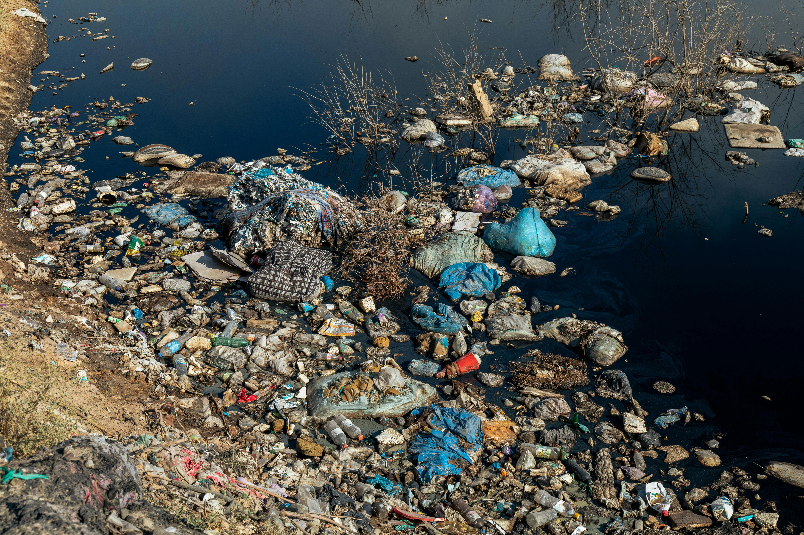
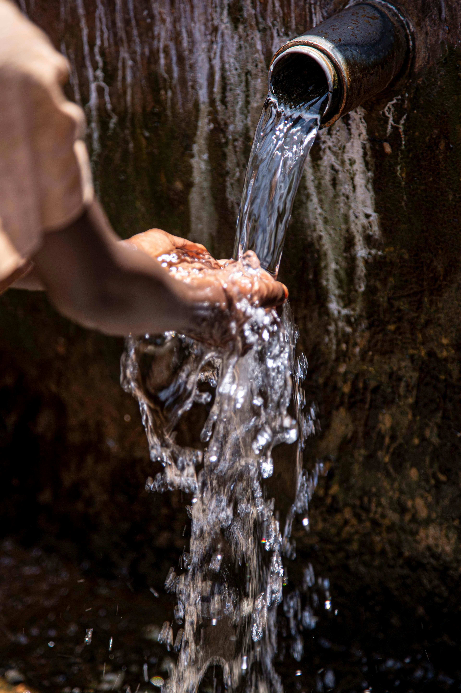

Deforestation
Paper & fiber demand drives logging. Forest loss damages ecosystems and climate resilience.
A modern and thoughtful solution to the rising plastic crisis and deforestation caused by soaring paper demands.
Packaging choices have consequences: forests cleared, oceans clogged with plastic, and huge water footprints. We need alternatives that are scalable and sustainable.

Paper & fiber demand drives logging. Forest loss damages ecosystems and climate resilience.

Clear-cutting and commercial logging remove critical habitat and release stored carbon.

Single-use plastics persist in the environment and break down into microplastics.

Conventional material production uses massive amounts of freshwater — something many regions can't sustain.
Produced via fermentation, creating a dense, strong network that can be formed into packaging. It’s compostable, low-impact, and has a tactile, premium finish.
Microbial cultures produce these in controlled fermentation vessels.
Sheets are harvested, rinsed, and pressed to a targeted density and thickness.
Surface finishes, texture, and any printing are applied using compost-friendly inks.
The potential is huge.If this does not justify the swtich nothing will -
| Property | Value | Notes |
|---|---|---|
| Thickness | 0.3–1.2 mm | Customizable during pressing |
| Tensile strength | ~65–110 MPa | Usually stronger than plastic and paper |
| Water uptake | Moderate | just like conventional paper packages but is better with coatings |
| Compostability | Home/industrial | composting begins in as little as a week |
YES.It is proven to be just as strong as plastic even stronger in certain cases.
degradations begins in as little as a week.
Yes. We recommend water-based inks and provide print profiles to preserve compostability.
Sign up now to get early access and be the first to know when we launch.
Join the WaitlistTo receive a sample pack, please send your name and shipping address in an email to:
samples@bactobags.com